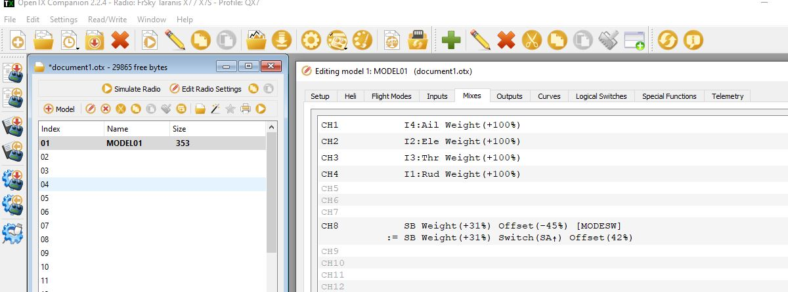

RC Transmitter Flight Mode Configuration¶
This article shows how you can enable up to 6 autopilot control/flight modes to be set from your RC transmitter.
Flight modes configuration¶
The mapping between switch position and flight mode is set in the Mission Planner Flight Mode screen.
You can set up the flight modes available on the transmitter by doing the following:
Turn on your RC transmitter
Connect the Pixhawk (or other autopilot) to the Mission Planner
Go to the Initial Setup | Mandatory Hardware | Flight Modes screen
Note
As you move your transmitter’s flight mode switch the green highlight bar will move to a different position.
Use the drop-down on each line to select the flight mode for that switch position.
When finished press the Save Modes button.
Setting the flight mode channel¶
The flight mode channel is the input radio channel that ArduPilot monitors for mode changes.
Transmitter configuration¶
The transmitter must emit PWM signals in the correct range to allow us to map a mode to a switch position.
Note
The correct PWM ranges for selectable modes are shown alongside each mode selection dropdown in the Mission Planner Flight Mode screen (see screenshot above).
If you want to just support three modes (using a three position switch) then you would configure the transmitter to produce PWM pulse widths of 1165, 1425, and 1815 us for the respective switch positions.
If you want to support 6 modes then the transmitter will need to emit PWM widths of around 1165, 1295, 1425, 1555, 1685, and 1815 us. Typically this is achieved by configuring the transmitter to mix a two position switch and a three position switch (giving 6 modes in total). You can also do this with an analog dial if one is available, but it’s hard to reliably turn a dial to just the right position for six distinct settings.
The sections below provide links showing how to configure transmitters from different manufactures, and how to test (in Mission Planner) that each switch setting is emitting the appropriate PWM signal.
Test transmitter switch settings¶
You can use the Mission Planner Radio Calibration screen to test the PWM pulse widths for each mode setting.
Simply toggle through the modes on your transmitter and confirm that the PWM for the selected channel matches the required PWM values. The screenshot below assumes that the flight mode channel is set to Radio 5.

Tutorials for specific RC hardware¶
Here are some user-contributed tutorials for doing this (or adding more modes to RC units with just a two-position toggle) with various RC systems:
- Any OpenTX based transmitter:
Simply select two switches (one must be three position) and add these mixes on the appropriate flight mode channel used for your vehicle. The example below shows it for a plane using Channel 8 for flight mode (default) and using switch SB selecting three flight modes with SA switch up , and selecting an additional three flight modes via SB when SA is not in the up position.
{kind=link}
- JR XG8 DMSS
- JR9303
- JR X2720
- FlySky FS-I6
- Futaba T8FG
- Futaba T8J
- Futaba T7CP
- Futaba T6EX
- Futaba 9ZAP/ZHP
- Futaba T10CAG
- Futaba T14
- Futaba T14SG
- Futaba 9C Super
- Graupner MX-16
- Turnigy 9x(or an even easier way) (Here!) - Turnigy 9x with ER9x firmware
- Turnigy 9XR
- Turnigy TGY-I6
- Hitech Aurora 9
- Spektrum DX8 (alternate method below)
- Spektrum DX7s
- Spektrum DX7 Version 6
Spektrum DX8 (alternate method)¶
This section describes an alternative way to set 6 modes with the Spektrum DX8. This method uses the Gear switch and the Flight mode switch. All the other switches can be assigned as preferred. This method also allows each mode to be set in the middle of each mode’s pulse width range so small changes will not change modes. Use Mission Planner Flight Modes setup to monitor the Current PWM for these adjustments.
Setup the switches (required for the 6 modes)
- Hold roller bar down, turn on DX8, scroll down to Switch Select,
Click roller bar. Set switches as follows:
- Gear = Gear (Channel 5)
- FMode = Inh Not assigned to a channel – Used to mix with Gear Sw (Channel 5) for 6 modes
- Others anyway you want. One method is as follows:
- Knob to aux1 = channel 6 for camera tilt / tuning
- Mix = aux2 = channel 7 to save Way Point or RTL, auto trim or other settings in APM configuration.
- Flap to aux3 = channel 8 for other uses
- Click BACK until the normal screen appears, or turn off power, then turn power back on.
- Hold roller bar down, turn on DX8, scroll down to Switch Select,
Click roller bar. Set switches as follows:
Set up the non-mixed servo setting for channel 5 (Gear channel controlled by the Gear Switch)
This will be the values with no mixing - F Mode switch in the 0 position and sets the lowest pulse width to 1165 us (mode 1) and highest to 1815 us (mode 6)
Click the roller bar, scroll down to Servo Setup, Select the Gear channel, Select Sub Trim.
Set sub trim to 0
Select Travel.
Set travel (left, position 0) for 1165 us pulse (~90%).
Set travel (right, position 1 for 1815 us pulse (~74%).
Set up Mix 1 to change the Gear Pulse width when F Mode is in position 1
Click roller, scroll down to Mixing, click roller, scroll to first line under Mix (has xxx > xxx, AIL > RUD, or some other mix set),click roller, Select Mix 1, Click roller.
Set Mix: Gear > Gear. Gear changes Gear depending on Switch F Mode setting
Set Offset = 0, Trim = Inh.
Set SW = FM 1
Set the F Mode switch on the transmitter to position 1.
Set the Gear switch on the transmitter to position 0.
Set top Rate for pulse width of 1290 us for mode 2 (~-35%)
(change = 400 us * -90% * -35% = 126 us. Result = 1165 us + 126 us = 1251 us = mode 2)
Set the Gear switch on the transmitter to position 1.
Set bottom Rate for pulse width of 1685 us for mode 5 (~– 45%)
(change = 400 us * +73% *- 45% = -131 us. Result = 1815 us - 131 us = 1684 us = mode 5)
Set up a mix 2 to change the Gear Pulse width when F Mode is in position 2
- Mix: Gear > Gear. Gear changes Gear depending on Switch F Mode setting.
- Set Offset = 0, Trim = Inh
- Set SW = FM2
- Set the F Mode switch on the transmitter to position 2
- Set the Gear switch on the transmitter to position 0.
- Rate top Rate for pulse width of 1425 us for mode 3 (~–72%) (change = 400 us * –90% * – 72% = 259 us. Result = 1165 us + 259 us = 1424 us = mode 3)
- Set the Gear switch on the transmitter to position 1.
- Set bottom Rate for pulse width of 1550 us for mode 4 (~–89%) (change = 400 us * +73% * – 89% = -262 us. Result = 1815 us - 262 us = 1553 us = mode 4)